Character Object Management
The introduction of new objects to characters uses functions that are found in the CC/iC Create tab of the add-on.
This section describes the various workflows used to create and attach new character objects in Blender and export them back to Character Creator where they can be stored in a custom asset library.
Adding Objects to Characters
The example discussed here uses a simple Blender created model of a gold ring with a BSDF shader and shows how to properly add it to a Character Creator character. This character + added item can then either be returned to Character Creator, used in Blender or sent onwards to Unity (depending on which workflow you are using).
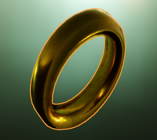 |
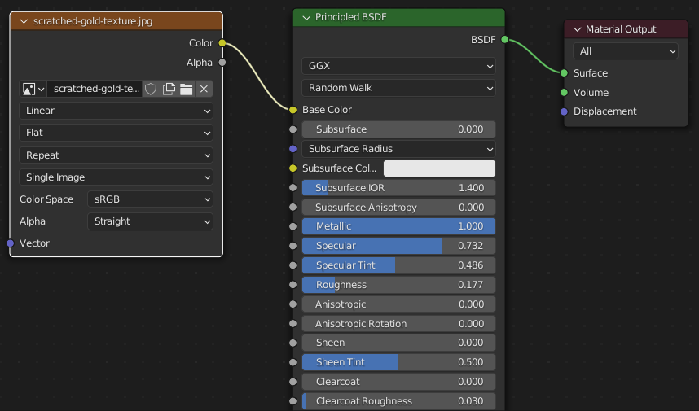 |
A simple mesh made in Blender. (note: the object origin is kept as the world origin) |
A Principled BSDF shader made with Blender’s shader node editor. |
‘Create’ Object General Workflow
Firstly create the item you wish to add to your character. You may do this in a separately stored .blend file and append it to your working character when needed, or model it directly onto the imported character.
For this example the origin of the model item is kept at the world origin (0,0,0), and the material for the model uses a node based BSDF shader (with only an Image Texture node as the input for the base color - for simplicity).
Export According To Pipeline
If you wish to add the item to the character and then return it to Character Creator, the please export from CC using the Blender Round Trip Workflow.
If you intend solely to use the character and added item in Blender, then use the basic Export Settings From Character Creator or iClone.
If you wish to have a character that is editable (and indeed re-editable) in Blender which will ultimately be destined for Unity, then follow the directions in the Unity Round Trip Workflow.
Tip
Potentially the best course of action is to use the Blender Round Trip Workflow and return the character to Character Creator.
This will allow you to save the new item to your Character Creator library and re-use it on other characters (discussed below).
Export of character + new library item can then be made for whichever pipeline you subsequently want to use.
Import Character and Position Accessory
Import your character with a Standard Import.
Add your new object (either create it directly or append it from a library file).
Position the object (in Edit mode) according to your needs (this example requires a ring to be on a finger).
New model positioned appropriately on the character.
Adding the Object to the Character
Select the object in Object mode
In the CC/iC Create tab, open ‘Object Management’ and click on ‘Add To Character’ in the ‘Objects & Materials’ section.
- 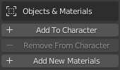
‘Add to Character’ will have a number of effects. Firstly, the object will be have the character armature set as it’s parent and an Armature modifier applied to the object. Secondly, the shader on the object’s material will be reconstructed and changed into a PBR shader suitable for use in Character Creator.
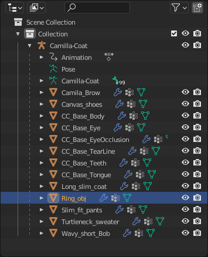 |
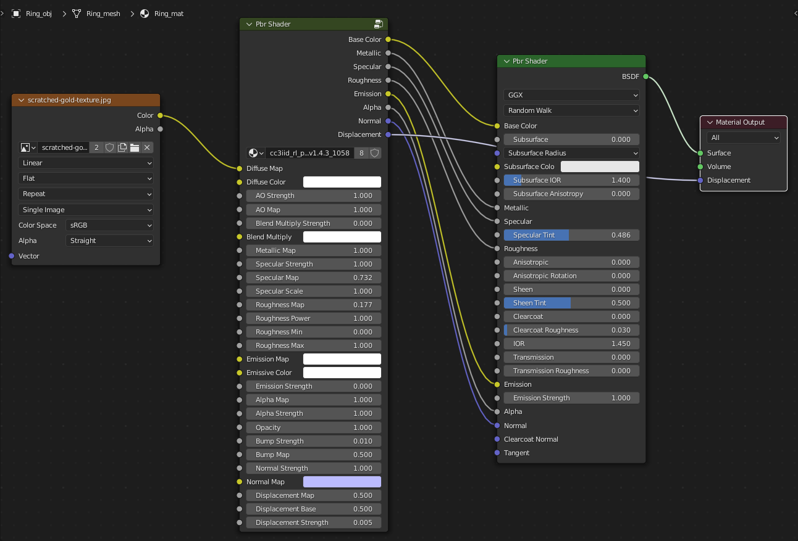 |
The outliner changes to reflect the hierarchy change (object parented to the character armature). |
A PBR shader is constructed to look identical, but be compatible with Character Creator. |
Add Weights to the Object
Re-select the object in Object mode.
Using the ‘Armature & Weights’ tools in the CC/iC Create tab: Set the armature to ‘Rest Position’ as shown.
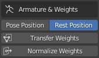Click ‘Transfer Weights’ to ‘weight paint’ the object with appropriate bone influences.
The images below show a ‘before and after’ the weight transfer to show what happens.
Before: (Weight Paint mode view and Object data - Vertex Groups)
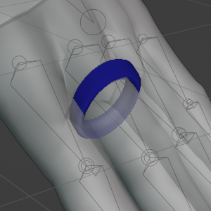 |
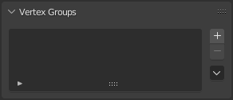 |
No weights are set. |
No vertex groups are present |
After: (Weight Paint mode view and Object data - Vertex Groups)
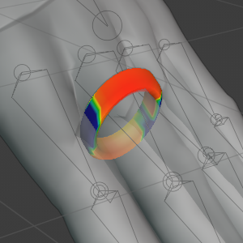 |
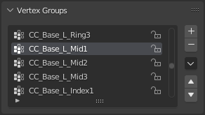 |
Weights are ‘painted’ for each vertex group according to bone proximity. |
A full set of vertex groups have been added (only relevant ones have weights painted). |
The weights are transferred by proximity and as such will have several bone influences, this is best suited to clothing items which are intended to conform to the character pose.
Should you wish to have only a single bone influence then there are two options:
You can leave the weigh panting as it is and export the character + added item back to CC. In CC you can then convert the item to a ‘Non Conformable Accessory’ which will automatically repaint it with a single bone influence and parent it a bone in the character (discussed further below).
Or you can manually repaint the item with only that bone as influence, then after export back to CC or further use elsewhere, you can leave the item as a ‘Conformable Item’. So after removal of all unwanted vertex groups and 100% weight painting (in weight paint mode) the Weight Paint mode view and Object data - Vertex Groups pane should look similar to those shown below.
Manual Weight Paint for Single Bone:
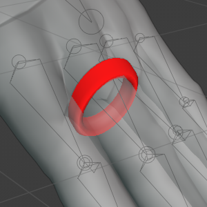 |
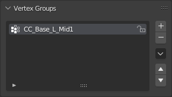 |
100% weight paint for a single bone. |
Only one bone has been allowed influence. |
Export/Actions According to Pipeline
For use only in Blender: If you are only using the added object in Blender then since it is positioned and weighted, it will obey the pose of the character and is now ready for use.
For further Export to Unity: In the case of further export to Unity, again the positioning and weight painting mean that it can be safely exported to Unity as described in the Unity Round Trip Workflow.
For return to Character Creator: To return the character to Character Creator follow the procedure described in the Round Trip Detailed Workflow section of the documentation: using the ‘Export to CC3/4’ function.

This export can be re-imported using the ‘Plugins -> Blender Pipeline -> Import Character From Blender’. The Asset Import Status Report will contain the added model item.

Once the import has completed, the added object will be visible on the character (please note you’ll need to manually re-hide any penetrating meshes - see the Hiding Meshes in CC4 documentation for more information).
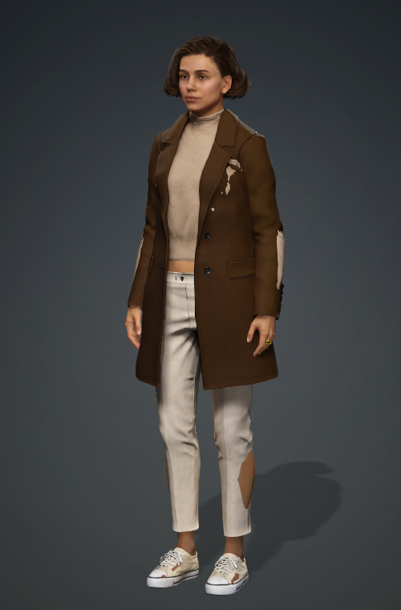 |
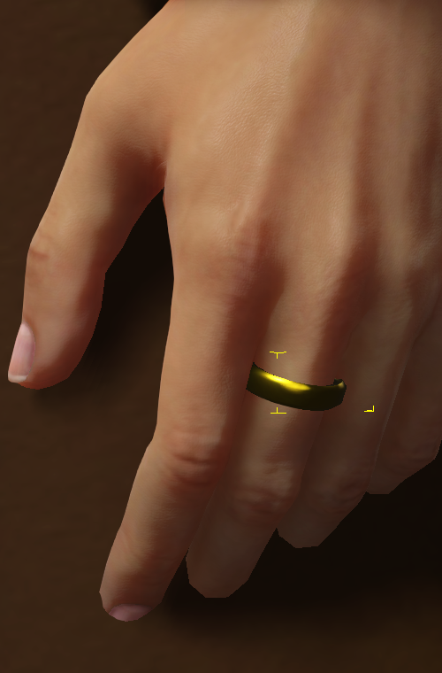 |
The character returns normally (NB: Blender Round Trip loses the hidden face data) with the object attached. |
The object correctly conforms to the pose of the character. |
Within Character Creator you now the opportunity to save the new item to your Character Creator library.
In the case of a ‘Conformable Item’ - one that deforms with the character pose (e.g. a clothing item), then it can be saved directly to your custom library. (see the section below on Saving to the Custom Library for more details).
In the case of a ‘Non-Conformable Item’ - one that is never deformed, but only moves according to the movements of a parent bone (e.g. a static inflexible object such as a brooch or glasses), then it can be converted to a ‘Non Conformable Accessory’ (see the section below on Converting to a Non-Conformable Accessory for more details) and then saved to the custom library (see: Saving to the Custom Library).
Converting to a Non-Conformable Accessory
Select the object in the Scene window object list.
{kind=link}
In the Attribute tab of the Modify window use the ‘Convert to Accessory’ tool.
{kind=link}
In the ‘Convert to Accessory’ dialog box, select ‘Bake Current Shape’ then click convert.
{kind=link}
The object will now appear in the Scene window object list with the accessory icon next to it.
When saving the accessory to the custom library it will be considered as an ‘Accessory Asset Type’ and can only be stored beneath the accessories folder; see below for details.
Saving to the Custom Library
New or customized objects can be saved to Character Creator’s Custom Library as follows:
Select the object in the Scene window object list.
Navigate to the Content window and select the Custom tab. You may freely create a new subfolder (NB: ‘Conformable Items’ are considered to belong to the ‘Cloth’ group and must be saved somewhere under the Cloth folder. ‘Non Conformable’ accessories must be saved under the Accessories folder.)
{kind=link}
Click Save and give the object a ‘File Name’ and an ‘Asset Type’ (save location)
{kind=link}
The object will be added to the custom library as the above Asset Type, using the current scene camera view as the object icon.
{kind=link}
New Item Saved to Cloth/Others
Sculpting Normals
This is currently work in progress.
This section is an aid to allow the sculpting of extra detail into the normal map of the imported character.
It allows the sculpting of detail directly onto the character body/face/hands and then the ‘baking’ of that detail into a normal map.
This baked normal map can then be applied to the base character model in order to give the illusion of detail without altering the topology of the character model.
It should find use in enhancing the appearance of features such as scars or burns.